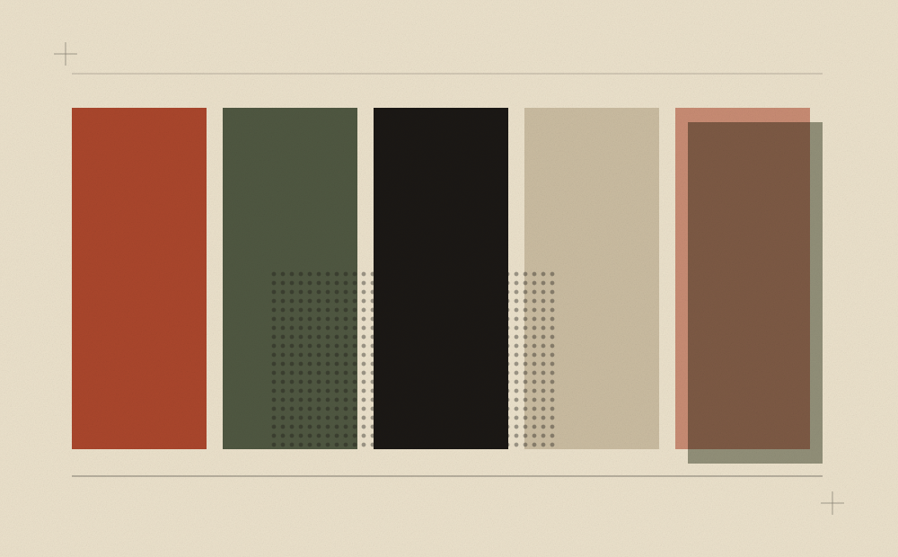

今日情绪色卡
每天给你一个颜色，配一句话。你写一句当天的心情，存进浏览器本地，一年下来就是一条彩色的时间线。
为什么值得做
颜色是随机的，你写下的字不是。半年后往回翻，会发现自己的情绪其实有季节。
Proposals · 七件
挑选的标准只有两条：一个晚上做得完；做完了会想拿给朋友看。都不需要装新工具，一个浏览器加一个编辑器就够。

每天给你一个颜色，配一句话。你写一句当天的心情，存进浏览器本地，一年下来就是一条彩色的时间线。
二十个毫无功能的按钮：会下沉的、按下去叹气的、按三次才响的、按了之后自己跑开的。每个配一段正经的展品说明。
木纹外壳，旋钮能转，频率永远停在同一个台。打开就播白噪音，底下一行字缓慢滚动一条随机引语。
二十五分钟专注，背景颜色随剩余时间从橄榄走到赤陶。时间到，屏幕上放十秒彩带，然后安静地等你按下一轮。
把气温翻译成心情：「十七度，适合把外套敞开走一段路。」「三十四度，请把自己放进冰箱。」一行字代替所有图标。
你输入一段话，它一个字一个字敲出来，伴随着真实的咔嗒声。敲完之后，纸从页面底下缓缓被推上来。
一张软木板，便签可以用胶带贴在任意位置，能拖动、能旋转、能撕下来重贴。位置存起来，下次打开还在原处。
Closing
选那个让你「啊，这个我也想过」的。那种反应通常说明你已经知道怎么做了 —— 只是一直没动手。